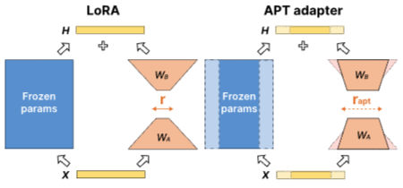
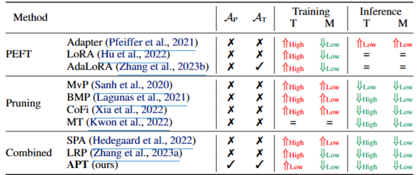
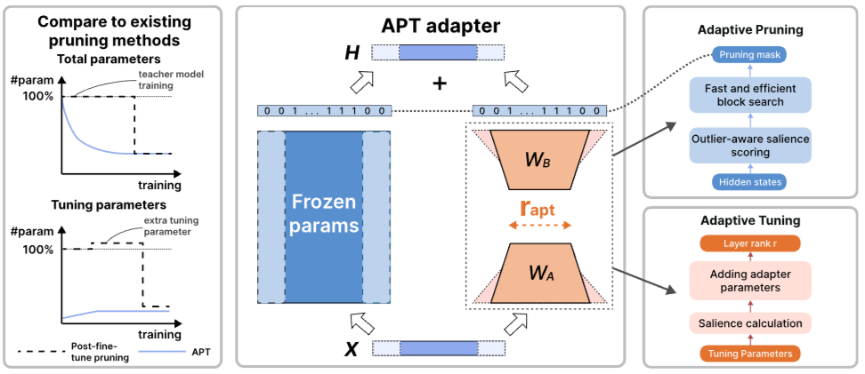
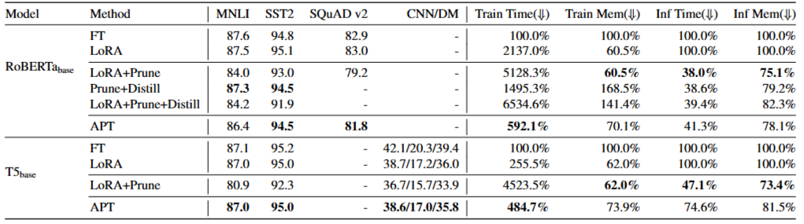
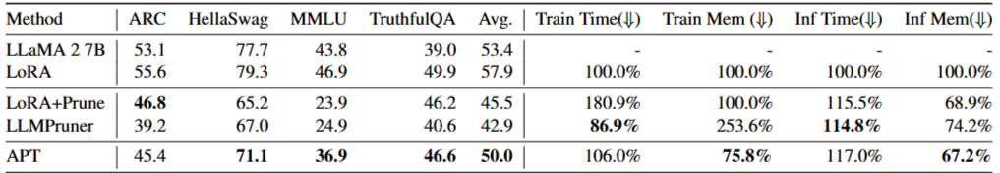
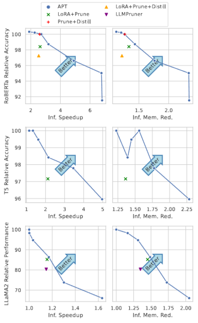

Abtract
- LM의 Fine-tuning과 inference는 비용이 큰 거로 알려져 있어 PeFT로 적은 수의 파라미터를 사용해 훈련할 때 메모리 사용량을 줄이려고 하지만 inference는 향상시키지 못함
- Structured Pruning은 inference를 향상시키지만 가끔 훈련 메모리와 시간을 증가시킴
- training과 inference를 둘 다 향상시키기 위해서 APT를 사용
- fine tuning의 초기 단계에서 중요하지 않은 파라미터를 버리면서 빠르고 정확한 수렴을 위해 salient tuning parameter를 동적으로 추가함
- baseline과 비교했을 때 APT는 98% 성능을 유지하면서 60% pruning을 가능하게 했음 (RoBERT와 T5 모델)
- LLAMA 모델은 86.4%의 성능을 유지하면서 70%를 감소
- APT는 LM의 fine-tuning 속도를 8배 향상시키고 training에 필요한 메모리를 70% 감소시킴
Introduction

- APT adapter를 통해 학습된 LM의 파라미터를 pruning과 fine-tuning을 adaptively하게 진행해 APT는 training과 inference, 둘 모두 향상 시킴
- APT adapter의 input/output dimensions와 rank(r_apt)를 동적으로 adjust(add/reduce)
- adapter dimension을 prune해 차원을 줄이는 것은 고정된 매개변수를 제거해 학습과 추론을 더 빠르고 메모리 효율적으로 만듬
- adapter ranks는 LM의 성능을 회복시키는데 도움을 줌
- 반면, LoRA는 훈련에는 도움이 되지만 모델 크기를 줄이지 않아 inference엔 도움이 안됨
- LoRA는 고정된 파라미터와 평행하게 low-rank 선형 계층을 사용하지만 수렴하는데 시간이 오래 걸림 (메모리 사용량 감소)
- structured pruning은 layer을 없애기에 빠르지만 LM을 재학습하는데 큰 비용과 시간이 듬
- LoRA와 같은 PEFT와 structured pruning을 함께 사용하면 training과 inference에서 효율을 향상시킬 수 있지만 한계가 있음
- 눈에 띄는 성능 저하와 추가적인 훈련 비용이 필요
- 
이 논문에서는 PEFT와 structured pruning의 장점을 합쳐 fine-tuning과 inference를 더 효율적이게 할 수 있게 함
논문에서는 사전 학습된 LM의 파라미터가 일반적인 지식을 가지지만, 그것이 하위 작업(downstream tasks)에 얼마나 중요한지는 다르다고 주장
- 즉, 모든 파라미터가 동일하게 중요한 것은 아니란 것
- LM의 지식이 특정 작업이나 문제에서는 더 중요하게 작용하고, 다른 작업에서는 덜 중요할 수 있다는 의미
- 그래서, 초기 학습 단계에서 fine-tuning 작업과 관련이 없는 파라미터들을 제거해 성능은 유지하면서 모델을 더 간소화하고 효율적으로 만들 수 있음
APT 매커니즘
- APT는 outlier를 고려하는 salience(중요도) 점수 계산 함수를 통해 pruning mask를 학습하며, 이를 통해 관련 없는 LM 파라미터 블록을 제거
- outlier를 고려해 중요도를 평가
- 또한, fine-tuning 중에는 조정이 필요한 layer의 중요도에 따라 더 많은 tuning 파라미터를 추가 (성능 향상)
- 단순히 파라미터를 줄이지 않고 특정 작업에 중요한 layer의 경우 필요한 파라미터를 추가로 할당해 성능을 최적화
- teacher와 student 파라미터를 공유하는 self-distributed technique을 통해 효율적으로 계산
즉, APT는 모델의 크기를 줄이면서도 작업에 필요한 부분에는 더 많은 자원을 할당하여 성능을 유지하거나 개선하려는 방법
Related Works
- PEFT
- 적은 파라미터만 선택하거나 LoRA와 같은 방법으로 Layer를 추가해 학습의 효율을 늘림
- AdaLoRA는 동적으로 파라미터를 조정하지만 추론 효율은 향상시키지 못함
- Model Compression
- 양자화 및 pruning으로 추론 효율성을 향상시키지만 특정 프레임워크/하드웨어 지원이 필요해 제한된 사용
- 추가적인 재학습을 통해 훈련 비용이 필요
- 두 방법을 결합
- training과 inference에서 메모리와 효율이 상승하지만 성능 하락이 심함
문제 정의
목표 : 사전 학습된 LM의 성능을 유지하면서 training과 inference의 효율을 향상시키는 것
- 직관적으로 적은 파라미터만 tuning하면 필요한 훈련 메모리가 작고 시간도 짧음
- 파라미터가 적은 모델은 inference할 때 메모리도 적게 필요하고 빠르지만 성능이 안좋음
수학적으로 문제 정의
- 작업 손실
L을 최소화하면서, 전체 언어 모델(LM)의 파라미터 크기 가T번의 학습 단계 후에 목표 희소성(Target Sparsity, 전체 파라미터 중 pruning된 파라미터 비율) 도달하도록 제약 조건을 충족
- 작업 손실
L최소화L은 미세 조정(fine-tuning) 과정에서 모델이 특정 작업(예: 텍스트 생성, 분류 등)을 수행할 때 발생하는 손실 값입니다.- 목표는 모델의 손실
L을 최소화하는 것입니다. 즉, 모델 성능이 최대한 유지되거나 개선되도록 하는 것이 목표입니다.
- 제약 조건: 목표 희소성
- 모델의 전체 매개변수 중 일부를 가지치기(pruning)하여 제거합니다.
- 목표 희소성 γT\gamma_TγT는 가지치기된 매개변수의 비율을 나타내며, 예를 들어 라면 전체 매개변수의 50%를 제거하는 것입니다.
- 이 값이 높을수록 메모리 사용량을 줄어들지만 성능이 하락
- 학습 단계 T
- 모델은
T번의 학습 단계를 거칩니다.T가 끝났을 때 모델이 에 도달해야 합니다. 즉, 학습이 진행되는 동안 점진적으로 매개변수를 줄여가며 목표 희소성을 달성해야 한다는 뜻입니다.
- 모델은
제약 조건 :매 training step마다 LM의 sparsity가 이상으로 유지되고 tuning 파라미터의 개수는 이하로 유지
- 이를 유지하기 위해 pruning mask () 와 tuning rank () 을 Control \delta(Θ_t, M_t, R_t) \leq ∆_t, $$$$ \forall t \in \{0, 1, \ldots, T\}.
- x = inputs, y = labels, D = task Dataset, C = LM의 총 파라미터 수, = LM의 tuning 파라미터 수, t = 현재 학습 단계, T = 전체 학습 단계
Adaptive Pruning and Tuning (APT)
 fine-tuning 과정에서 진행
- 초기 학습 단계에서 Pruning
- 학습 초기 단계에서 LM의 파라미터를 Prune해 희소성 을 증가시키고, 학습 비용을 줄임
- salience scoring function으로 prune
- tuning 파라미터 수 제한
- Pruning 과정에서도 가 되도록 제한해, 학습 과정에서 과도하게 많은 파라미터를 조정하는 일이 없도록 함
- 학습 시간이 길어지는 것을 방지하고, 효율성을 높이기 위한 방법
- tuning 파라미터를 초기 학습 단계에 추가해 학습 성능 하락을 방지
- 동적으로 파라미터를 추가하면 LM의 수렴을 가속화하고 성능을 유지할 수 있음
- Salient layer에서 파라미터 추가
APT adapter
- LoRA위에 APT adapter를 구축하지만 동적 pruning과 tuning을 지원하는게 다른점
- fine-tuning 과정 동안 APT adapter가 input 를 output 로 project할 때, binary pruning masks (input = , output = )와 dynamic rank ()를 APT Adapter 안에 설계해 total & tuning 파라미터를 control할 수 있도록 함
- 구체적으로 tuning 파라미터 와 를 사용해 APT adapter 는 다음과 같이 표시
- s = constant scaling factor(LoRA의 구현 따라 상수 scaling factor), = Mask와 corresponding matrices(해당 행렬)간의 Hadamard 곱
- multiplying mask가 0으로 설정되면 parameter block이 prune되고 1로 설정되면 유지
- 구체적으로 tuning 파라미터 와 를 사용해 APT adapter 는 다음과 같이 표시
- fine-tuning 과정 중 가중치 행렬 와 에 대해 를 동적으로 증가
- 동적으로 조정하므로 LoRA보다 효율적일 수 있음
Transformer와 FFN
- Transformer 기반 모델의 경우 APT adapter를 queries와 values에 추가 (multi-head attention layer, MHA)
- 빠른 수렴을 위해 작은 모델을 학습할 땐 feed-forward network (FFN)에도 APT adapter를 추가했음
- RoBERTa나 T5 모델
- 이 경우 는 transformer의 hidden dimension를 prune하고 는 MHA의 attention heads와 FFN의 내부 뉴런을 prune함
이렇게 APT adapter는 pruning mask를 학습하고 ranks를 동적으로 조정해 tuning 파라미터가 성능을 유지하고 LM의 전체적인 파라미터 수를 줄여 training과 inference를 효율적으로 할 수 있게 함
Low-cost Adaptive LM Pruning ()
- APT adapter가 LM의 training과 inference의 효율을 높이기위해 LM 파라미터를 fine-tuning 시작부터 adaptively prune함
문제 : prune할 파라미터를 어떻게 찾는가?
- 인 초기 학습 단계 때 특정 작업에 대해 파라미터 block의 outlier-aware salience score를 계산
- 이후에 fast-search algorithm을 사용해 prune할 파라미터를 찾아 binary pruning mast를 갱신
Outlier-aware salience scoring of LM parameters
- tuning & frozen 파라미터를 모두 고려하는 outlier-aware salience score를 계산하는것이 핵심
- salience는 파라미터의 가중치-기울기 production(곱셈) 크기(Magnitude)로 정의 됨
- 하지만 frozen weight의 기울기는 PEFT에선 접근할 수 없으므로 활성화 값과 그에 대한 기울기의 곱의 크기로 중요도를 계산함
- 활성화 값(the magnitude of the product of activations) : 신경망에서 각 layer의 출력 값
- 기울기(gradient) : 활성화 값에 대해 계산된 기울기
- 곱의 크기를 사용하여 중요도를 계산하는 이유는, 활성화 값과 그에 대한 그래디언트가 곱해지면 해당 값이 얼마나 중요한지에 대한 정보를 나타낼 수 있기 때문
- activation(활성화 값)과 gradients(기울기)를 곱하기전에 배치 단위로 더해 메모리 사용을 줄임
반면 block outlier의 파라미터는 task-specific 능력에서 중요한 역할을 하며 이전의 양자화 방법들에서 제안되었음
- outlier 파라미터에 의해 발생하는 이런 효과는 salience(중요도)가 block level에서 측정되면 평균화될 것임
- pruning된 LM에 더 많은 outlier 파라미터를 유지하려면 위의 salience 점수와 활성화의 첨도(kurtosis)를 결합함
그래서 supervised finetuning dataset 가 주어지면, outlier-aware salience score 는 다음과 같이 정의됨 eS(W_{:,j}) = \sum_{(x,y) \in D_t} X_i \left| \frac{\partial L(x, y | \Theta_t, M_t)}{\partial H_{j,i}} \right| \cdot \sum_{(x,y) \in D_t} X_i \left| H_{j,i} \right| $$$$ \hat{S}(W_{:,j}) = eS(W_{:,j}) + \left( Kurt(O_{j,:}) \right)^{\frac{1}{2}}
- H = LM의 activations 값, Kurt() = Kurtosis, = activation
- 논문의 Appendix B를 보기
Efficient search of LM block parameters
- salience score를 계산했다면 다음으로는 LM sparsity를 이상으로 증가시키기 위해 binary pruning mask을 학습하는 단계를 진행
- 직관적으로 덜 중요한 salience score를 가진 block을 prune해야 함
- 이는 latency-saliency knapsack 문제로 공식화됨
- transformer layers를 가진 LM의 경우, layer 는 MHA heads와 FFN neurons를 가지고 모든 transformer layers의 hidden dimension sizes는 이고 근사화된 LM 파라미터 수는 다음 수식과 같음
- = MHA head 당 dimension
- 문제 정의에서 정의한 제약을 유지하기 위해서 MHA heads, FFN neurons와 model hidden dimension을 동시에 pruning해 를 줄임
- 따라서, 가장 먼저 salience를 파라미터의 수로 나눈 값으로 block을 정렬함
- parameter size는 block의 quantity에 따라 증가하므로 binary search를 사용해 sparsity constraint 에 따라 유지될 상위 salient block을 선택해 제약을 만족
- 자세한 건 논문의 Appendix C를 보기
Adaptive and Efficient LM Tuning ()
- PEFT로 fine-tune pruned하면서 성능이 하락한 걸 동적으로 tuning parameters를 추가해 성능을 향상
- tuning parameters를 추가하는건 메모리를 더 사용하는 것이므로 task-sensitive APT adapters에만 추가하는 방식으로 통제
- 각 APT adapter의 중요도를 결정하기 위해 salience score를 계산
- salience를 기준으로 정렬한 다음 상위 절반의 APT adapters를 선택해 를 증가시켜 parameters를 추가
Salience scoring of APT adapter
- tuning parameter의 기울기 정보가 layer salience를 결정할 때 사용하므로, Outlier-aware salience scoring of LM parameters에서 말한 첫 번째 방정식으로 각 tuning parameters의 salience를 계산할 수 있음
- APT adapter의 salience를 에 있는 parameter salience의 합으로 정의
- 계산한 각 APT adapter의 로 새로운 tuning parameter를 어디에 추가할지 결정 가능
Dynamically adding APT adapter parmeters to recover task performance
- APT adapter의 중요도가 로 계산되면, adaptive tuning은 다음으로 budget 에 따라 salient tuning layer의 ranks ()를 증가시켜 tuning parameter를 추가
- 모든 tuning layers을 을 기준으로 정렬하고 상위 절반 salient의 rank를 선형적(linearly)으로 증가
- tuning parameter를 에서 로 증가시킬 때, salient layer의 rank는 에서 로 변경됨
- = floor 연산
- tuning parameter를 에서 로 증가시킬 때, salient layer의 rank는 에서 로 변경됨
- training stability를 위해 parameter를 추가하고 를 로 변환할 때, 에는 random Gaussian initialized parameters 을 concat하고 에는 0을 연결해서 새로운 paramter가 추가되기 전후에 layer의 출력이 변하지 않도록 함
- 이는 LoRA의 초기화와 동일
Efficient Self-Knowledge Distillation
- knowledge distillation 없이 training pruned하면 end-task 성능이 상당히 하락하기에 knowledge distillation을 사용
- 기존 방식은 fully trained teach model을 student와 함께 GPU에 넣어줘야 하므로 메모리와 training time이 많이 필요했음
- 이를 방지하기 위해 fine-tuning 과정동안 tuning student layers를 teachers로 duplicate(복제)해 전체적인 training time을 줄임
- frozen parameters는 student와 teacher 모델이 공유해 메모리 사용량을 줄임
- 기존의 CoFi에서의 distillation objective를 수정한 수식 L = \mu L_{\text{distill}} + (1 - \mu)L_{f t} $$$$ L_{\text{layer}} = \sum_{i=1}^T MSE(Tr(H_{\phi(i)}^s), H_i^t)
- = distillation 과정에서 0에서 1로 선형적(linearly) 변하는 값으로 pre-pruned model이 training data에 잘 맞도록 유도
- = CoFi의 distillation objective, = supervised fine-tuning objective, = block-wise randomly sampled teacher layers
- = teacher-student layer-mapping function (teacher layer를 가장 가까운 non-pruned student layer에 matching하기 위함)
- = layer transformation을 위한 tunable LoRA layer (matrix 로 초기화)
- 더 자세한건 논문의 Appendix A를 참고
실험
 
Result

제한 사항 및 추가 논의
1. 성능 격차: 대형 LM에서 가지치기를 할 때, 메모리 소비를 줄이기 위해 증류 없는 설정을 사용했기 때문에 성능 격차가 발생할 수 있습니다. 이를 개선하기 위해 메모리 효율적인 증류와 매개변수 공유 전략이 필요합니다.
2. 하드웨어 최적화: Ampere 아키텍처 GPU의 특성을 활용하여, 특정 레이어 차원을 최적화하면 더 나은 속도 향상을 얻을 수 있습니다.
3. 훈련 안정성: 매개변수의 동적 조정으로 인해 훈련이 불안정할 수 있으며, 옵티마이저를 재설정하는 전략이 필요하지만, 이는 불안정성을 초래할 수 있습니다.
-
교사 체크포인트: 훈련 중 교사 체크포인트의 선택 시점이 모델 성능에 영향을 미치며, 적절한 체크포인트 선택이 중요합니다.
-
비선형 어댑터: 비선형 어댑터가 성능 회복에 더 나은 성과를 낼 수 있는지에 대한 가능성을 탐구하고 있으며, 다양한 어댑터를 활용한 적응이 더 잘 탐구될 수 있습니다.